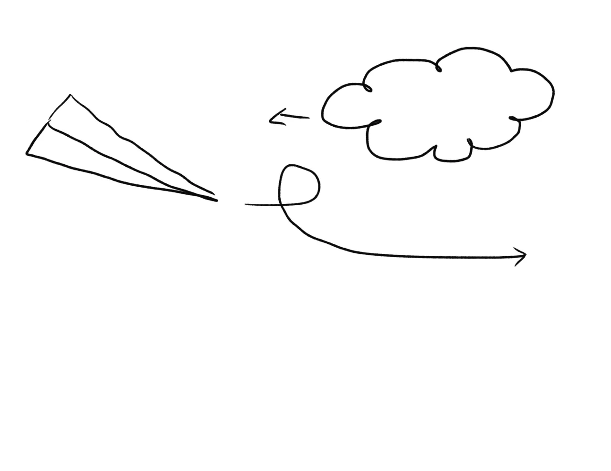
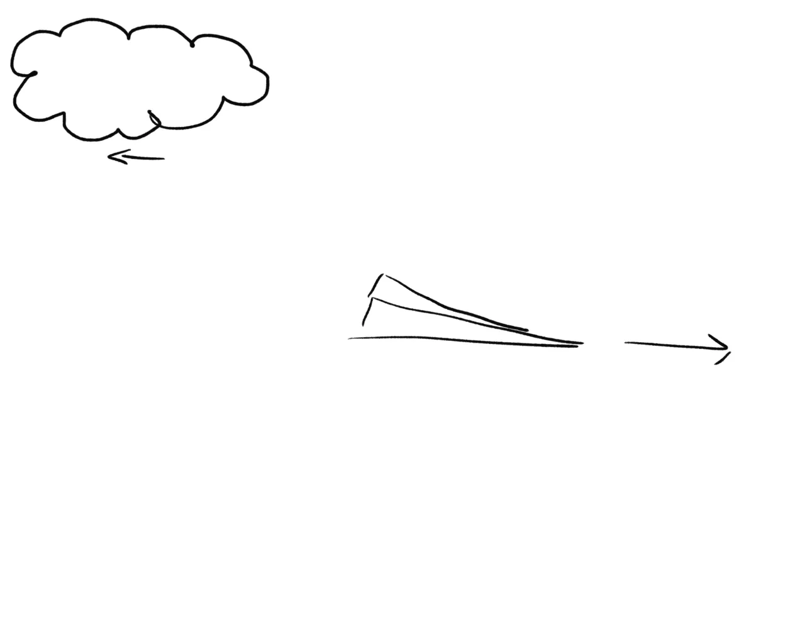
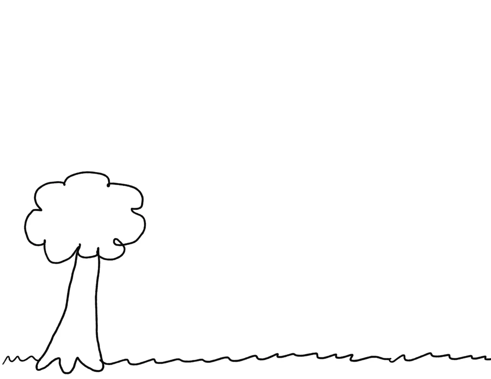
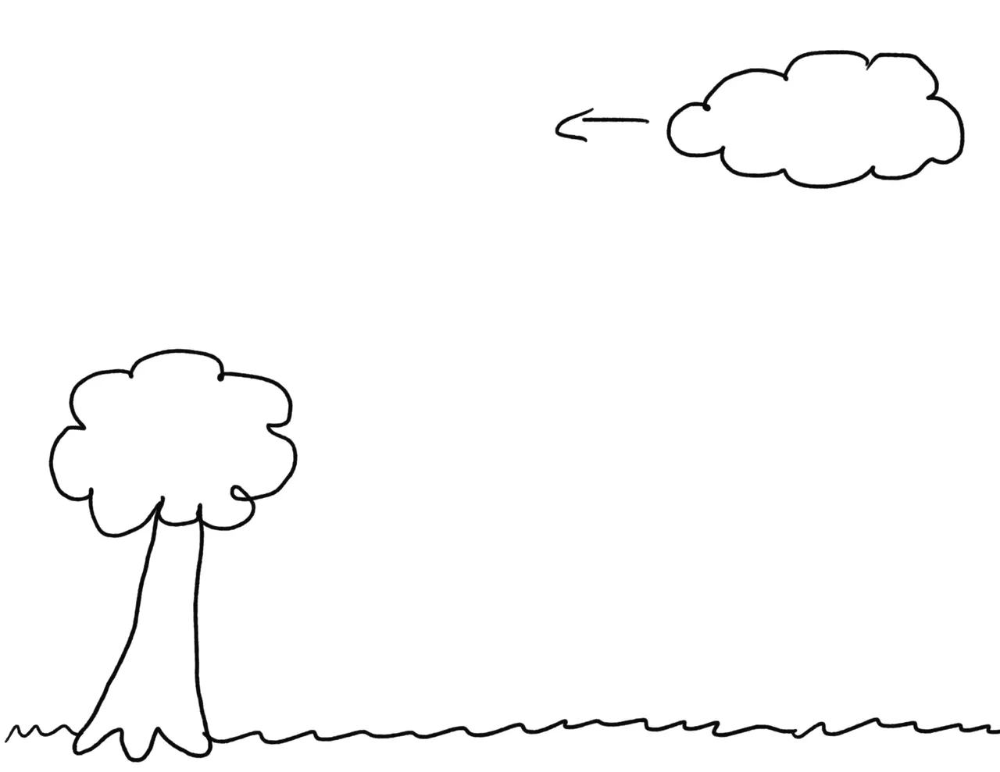
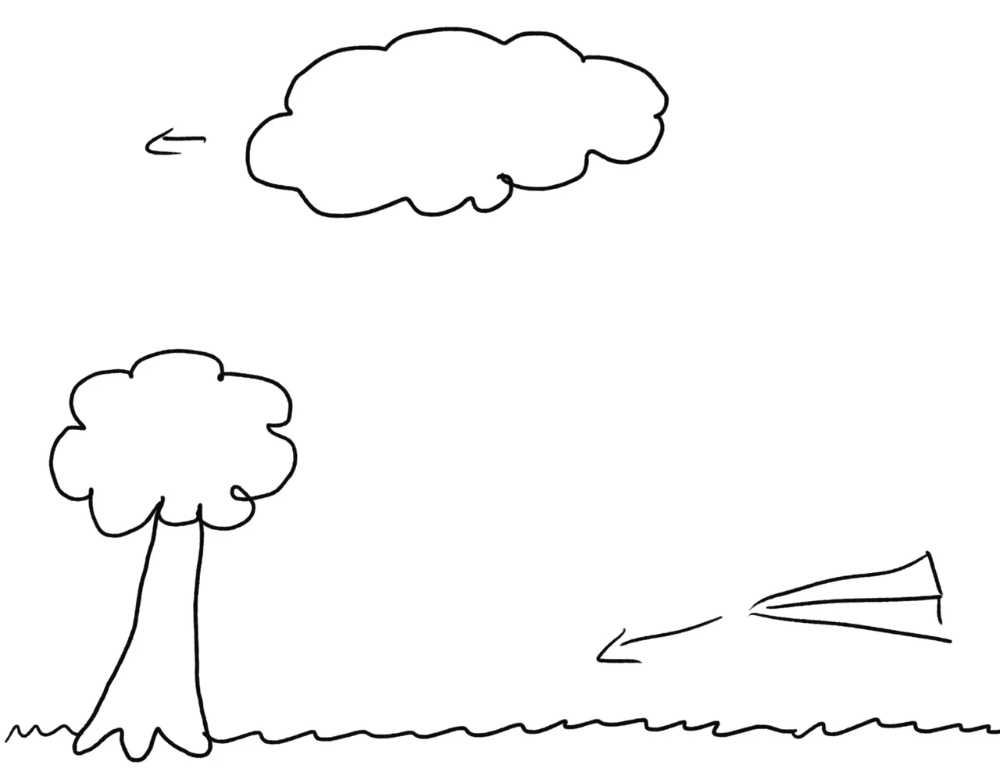
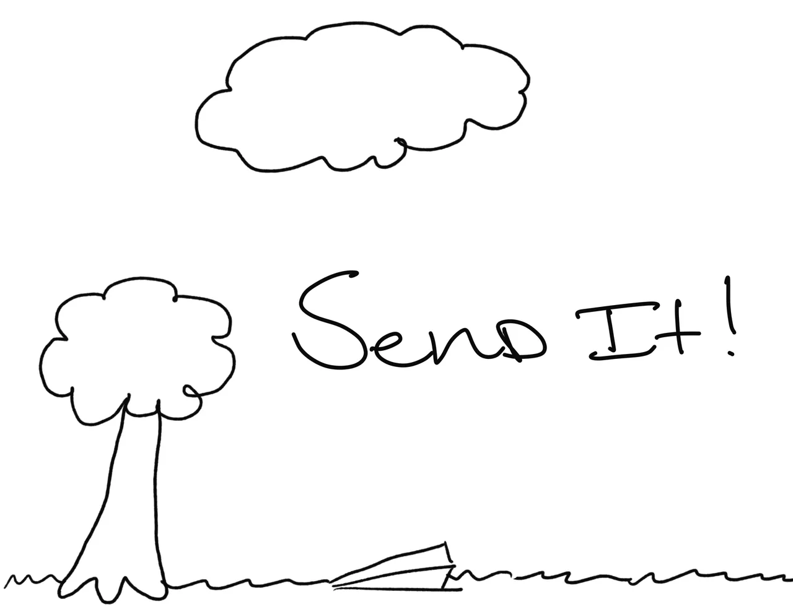
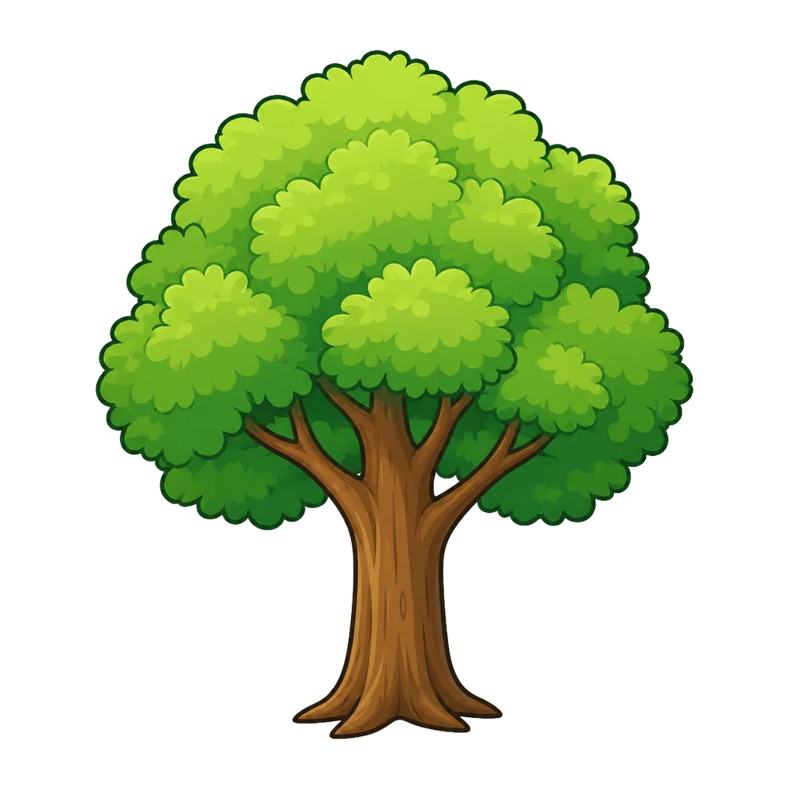
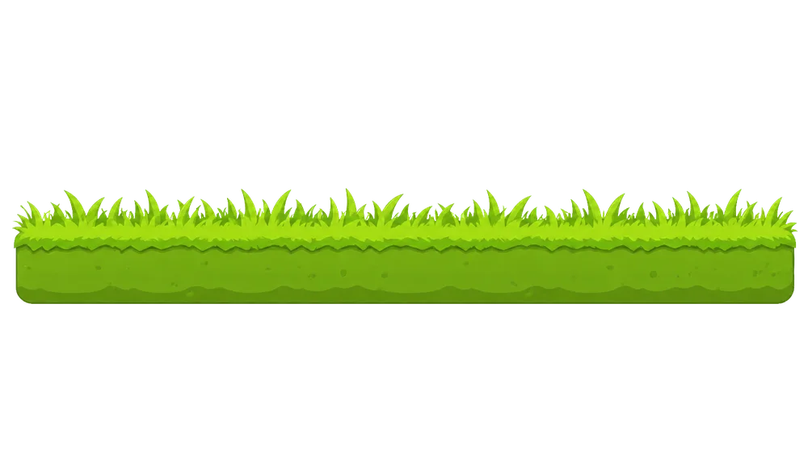

Workshop 07 · Cartoon-style motion graphic
SEND IT!
A paper airplane’s five-second flight — from open sky to a soft landing.
Concept
I created a five-second cartoon-style motion graphic about a paper airplane flying through a simple sky scene. The airplane enters from off screen, flies in front of moving clouds, performs a loop, and exits the frame. The scene then transitions down to a grassy area with a tree, where the airplane returns from the right and lands.
The animation ends with the phrase “SEND IT!” sliding in from the right in Cooper Black. The project uses clean cartoon assets, motion blur, position and rotation keyframes, a sky to ground transition, and a subtle Soft Light blend mode over the gradient background.
Theme
The theme is cartoonish. The paper airplane, clouds, grass, tree, and final text all work together to create a simple animated scene about a paper airplane that landed successfully.
Target Audience
The target audience is viewers who enjoy short, simple, and playful motion graphics. The animation is designed to be quick, readable, and fun within a five-second format.
Visual Style
The visual style is clean and cartoon-like. The scene uses a soft gradient sky, simple clouds, grass, a tree, and a paper airplane. The final text uses Cooper Black because the rounded letterforms match the playful cartoon style.
A subtle Soft Light blend mode is used over the background gradient to add a little atmospheric depth without distracting from the motion.
Possible Applications
This motion graphic could be used as a:
- Short social media animation
- YouTube intro or outro
- Animated sticker-style graphic
- Playful title card
- Class motion graphics project
Storyboard
Original hand-drawn storyboard sketches from the project PDF, shown in their six-frame order.
-
Frame 1 - Sky Entrance / Intro
The animation begins in a simple cartoon sky with a gradient background and a moving cloud. The paper airplane enters from off screen on the left.

Beat: IntroMotion: Plane enters, cloud drifts.
-
Frame 2 - Plane Loop / Beat One
The airplane performs a loop in front of the moving cloud. Position and rotation keyframes create the curved flight path, while motion blur makes the movement feel smoother.

Beat: Beat OneMotion: Plane loops through the sky.Effects: Motion blur.
-
Frame 3 - Plane Exits / Beat Two
The airplane finishes the loop and flies off screen to the right. This keeps the motion moving forward and prepares for the scene change.

Beat: Beat TwoMotion: Plane exits frame.
-
Frame 4 - Sky-to-Ground Transition / Beat Three
The scene pans downward from the sky to reveal the grass and tree. This creates the main visual transition from flying to landing.

Beat: Beat ThreeMotion: Camera/background pans down.Transition: Sky-to-ground reveal.
-
Frame 5 - Landing Approach / Beat Four
The airplane returns from the right side and approaches the grass. The tree and grass create the landing area, while another cloud moves through the background.

Beat: Beat FourMotion: Plane approaches landing, cloud drifts.
-
Frame 6 - Final Landing and Title / Outro
The airplane lands on the grass, and the final “SEND IT!” text slides in from the right in Cooper Black. The ending holds as a clean final title card.

Beat: OutroMotion: Plane lands, text slides in.Final title: SEND IT!
{kind=link}
{kind=link}
{kind=link}
{kind=link}
{kind=link}
{kind=link}
Planning
Assets Used
The assets used include:
- Paper airplane graphic
- Cloud graphics
- Tree graphic
- Grass graphic
- Gradient sky background
- “SEND IT!” text in Cooper Black
- Soft Light sky highlight layer
Animation Plan
The animation is five seconds long at 1920 × 1080, 30 fps.
A paper airplane flies across the sky using position and rotation keyframes, performs a loop, and exits the screen. Motion blur helps the fast movement feel smoother. Moving clouds add background motion.
The scene then transitions downward to reveal the grass and tree. The airplane returns from the right, lands on the grass, and the final “SEND IT!” text slides in from the right to complete the outro.
Production Decisions
Three choices from the brief shaped the final animation:
- “Position and rotation keyframes create the curved flight path, while motion blur makes the movement feel smoother.”
- “The final text uses Cooper Black because the rounded letterforms match the playful cartoon style.”
- “A subtle Soft Light blend mode is used over the background gradient to add a little atmospheric depth without distracting from the motion.”
Assets Used
-
Paper airplane graphic The star of the scene — flown with position and rotation keyframes. -
Cloud graphic 01 One of the moving clouds that add background motion. -
Cloud graphic 02 The second cloud, drifting through the landing scene. -

Tree graphic Marks the landing area in the sky-to-ground transition. -

Grass graphic The runway for the final landing.
Final Landing and Title
The airplane lands on the grass, and the final “SEND IT!” text slides in from the right in Cooper Black. The ending holds as a clean final title card.